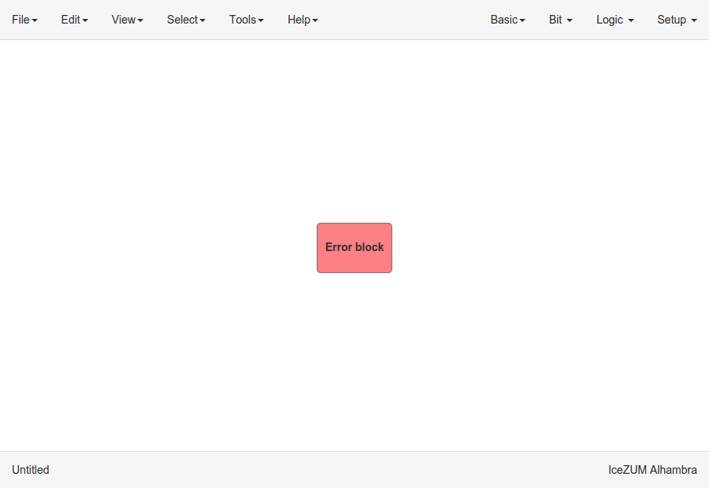

Design¶
Pan & Zoom¶
Pan is performed using the Ctrl + mouse left button or mouse right button over the background. Zoom is performed using mouse wheel.
Select¶
Block selection is performed with the mouse left button. Blocks can be selected/unselected individually using Shift+left-click. In addition, several blocks can be selected by a selection box. A selection is canceled when the background is left-clicked.
{kind=link}
Move blocks¶
Any block or blocks selection can be moved in the design using the mouse left button over the block or the selection. The selection can also be moved with the arrow keys.

Resize text blocks¶
Memory, Code, and Information blocks can be resized with the resize tool in the bottom-right corner of the block.
Block examination¶
Non-basic blocks can be examined by double clicking the block using the mouse left button. This is a recursive action. A navigation menu is shown on the bottom left corner, to easily jump back/up in the design. Pan, zoom and code browsing are enabled during navigation. Edit > Fit content is also supported. However, other menus are disabled.
{kind=link}
Verilog error detection¶
The Verify, Build and Upload errors are captured and showed in the design with a notification.

If the error comes from a Code block it is marked in red an inline annotation is set:

If the error comes from a Constant block it is marked in red.

If the error comes from a Generic block it is marked in red.
{kind=link}
Undo/Redo¶
Icestudio allows to undo/redo the following actions:
Add or remove a block.
Add or remove a wire.
Move a block or a blocks selection.
Edit an I/O block: name, type and value.
Edit a Constant block: name, type and value.
Edit a Memory block: name, type, format and value.
Edit a Code block: ports, parameters and content.
Edit an Information block: type and content.
Change the board.
Change the language.
Change the Project information: when undo/redo a Project information change, a clickable notification will appear to access the Project information section.